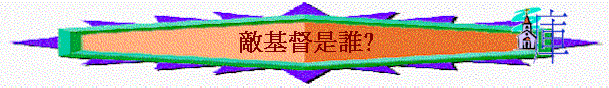

|
敵基督?! |
a) 敵基督是誰？
不同學者對於那位末世要來的敵基督，有不同看法，但如根據聖經，特別是啟１３、１７章的描述，敵基督應是：
i) 他是一個獸－－－敵擋基督，想代替基督
敵基督（antichrist）anti
這個介詞，可以譯為敵對（against）或代表，代替（in
place of）基督，而啟１３、１７都同樣講一個有七頭十角的獸，會在災難中出現，如從獸的特質、形容、工作，１３與１７章所描述的獸應是指同一個人物（or
一件事），彼此都是七頭、十角，都是褻瀆神，有權的，而更重要兩者都是形容今日神學界所講的「敵基督」。
因為此七頭十角的獸是敵擋基督的，向神說褻瀆的話（１３：６），逼迫在基督�堛爾t徒（１３：７），並與羔羊爭戰（１９：９），所以此獸明顯出來是為敵擋主的，而且此獸更是想代替基督的，若我們將獸的描述與基督比較，發覺此獸是想模仿基督，想代替基督的。
|
敵基督──獸 有十個冠冕（１３：１） 使人拜魔鬼（１３：４） 曾受死傷卻好了（１３：３、１２） 有魔鬼能力，權柄（１３：２） 在他隨從手下額上打印（１３：１６） |
主基督 頭上有許多冠冕（１９：１２） 使人敬拜神（１：６） 羊曾被殺，現今活著（５：６） 基督在神寶座那�堙]１２：５） 在144,004以色列，額上打印（７） |
因此敵基督就是１３、１７章所講的那七頭十角的獸了！
ii)
他是第七個頭───曾受傷郤被醫好的王
敵基督是那獸，但獸又指什麼？是一個獸或是代表一個人呢？從那七頭中描述，或許被我們更加瞭解。啟１３，形容那獸有七頭，啟１７：９－１３，解釋七頭是七個王，而第七個王卻是似乎受了死傷卻被醫好，而１３：１２、１４都說獸受刀傷，並醫好，似乎那第七個王是指向敵基督，那獸，加上原文「似乎受了死傷」和５：６之羔羊「像是被殺過一樣」，似乎此第七個王像基督死了又復活，若不是魔鬼給敵基督死過復活，要仿效基督，迷惑人，又那個地上的王會復活呢？所以敵基督，那獸大可能是指向一個王，那現今沒有來，將來在末世中必出現，而且會死過而復活的（啟１７：１０）。
iii)
他也是第八位───末世的世界之王
啟１７：１１亦指明此獸是第八位的王。「他也和那七位同列」英文是「and
is of the seven」也是屬於那七位，即是第八位王了，而（啟１７：９－１３）描述七頭又是指向七座山，而古時羅馬作家往往以「七座山」代表羅馬。羅馬所流治的版圖正好是今日歐洲，所以第七位王，可能是繼前六位過去後，成為歐洲的王，死後再復活，但為何亦是第八位，同指是敵基督呢？因為聖經啟１７：１２－１３描述十角是十王，會將所有權柄歸與那第八位王，好大可能性第七位王，由歐洲被稱王，最後成為十國，世界的盟主，身份的改變，變成了第八位，其實與第七位同列，同是一樣的，所以敵基督不單是死過而活的王，更是將來世界的盟主，世界之王了。
iv)
他是從無底坑出來───大罪人，沉淪之子
啟１１：７、１７：８都描述此獸是從無底坑上來。無底坑是拘禁邪魔的地方，所以從無底坑上來，從邪惡大本營上來，述有什麼好東西，而事實上，此哭是邪惡的魔鬼代表，牠在背後指使獸，給獸能力，而獸所作的罪惡的事，叫人敬拜自己，敵擋基督，迷感眾人，所以無怪乎帖後２：３用「大罪人」，「沉淪之子」，形容敵基督，的確他所作的是惡行，至終是引向沉淪的，也使人沉淪（啟１９：２０）。
v)
他仍未顯露───真正身份仍未能確定
啟１７：１０描述那第七位還未來到，要等未時才到，而帖後２：１－１０也是提到要等「那捆阻」，（可能是指聖靈或者指教會）除去，他才顯明，而今天教會仍未被提，聖靈仍在地上工作，所以敵基督仍未冒起出來，所以他真是指向那一個人，名叫什麼，我們還未能確定，但所肯定的他是那位在未世中，要敵擋基督，代替基督之世界之王了！
b)
他在大災難中有什麼主要的作為？
從啟１３及１７章我們看到他有以下不同方面的作為：
i)
對神───要褻瀆
啟１７：３形容他遍体有褻瀆的名，而１３：５、６更形容他會運用權柄，向神說褻瀆的話，誇大的話，要蔑視神，褻瀆那位可畏的神！
ii)
對基督───要爭戰
前文也說過，獸是敵基督的，並且會聯同十王的勢力，一同與羔羊───基督爭戰的（啟１７：１４），但羔羊才是萬主之主，萬王之王，至終得勝的才是祂！
iii)對聖城───要踐踏
但８：１３、太２４：１５都分別預言到將來那行毀壞可憎的，那敵基督必踐踏聖城，聖所，並除掉常獻的燔祭，污穢聖殿的！
iv)
對聖徒───要迫害
啟１３：７－１０「又任憑他與聖徒爭戰，並且得勝．．．．擄掠人的必被擄掠，用刀殺人的，必被刀殺」似乎到災難期間，敵基督會逼迫聖徒，與聖徒爭戰，並且得勝，並在神的容許下，殺了好多聖徒！
v)
對世界───要作王
啟１７：１－１３，指出那第八位的必作王，並且十國的王要將權柄能力歸與他，所以他在災難中必作世界的王。
vi)
對不信的人───要迷惑
前文也說過，獸的特徵是要代替，模仿基督，而且迷惑地上不信主的跟他，更聯同假先知的力量，引導人敬拜自己，以自己為神（啟１３：３、１４－１５）。
所以敵基督在大災難中的主要作為是敵擋神的勢力，敵擋主，更要迷惑世上的人拜，他抬高自己，要常高於神，但最後所作的卻是徒然；因為主返來的日子；必聯同眾天軍擒拿那獸，並將他扔在燒著硫磺的火湖�堙]啟１９：１９－２０），至終的勝利，至終的萬主之主，才是真正的基督。
c)從他的作為中對你自己的信仰基礎有什麼提醒？
啟１３：７－１０講述在大災難中，信徒受逼害，並且有死傷，但在10節中說：「．．．聖徒的忍耐和信心，就是在此」，的確，雖然表現上信徒是失敗，被殺要死，但聖經卻記載他們的信心就在此，換言之，在屬靈上，卻是成功，因為在此情況下，才真正反映到他們的信心就在此，反映了他們真正的信心，真正的信仰，而從敵基督對聖徒的作為中，給我學到，及提醒到以下真正信仰的功課。
i)
真正的信仰───在逼迫中仍順服忍耐
聖徒雖然在敵基督中受逼迫；但他仍有忍耐（啟１３：１９０），沒有因此而跌倒，因為真正的信仰，是有忍耐，忍痛苦，因為深信神有祂的美好旨意，所以即使要遭患難，是神所容許，仍順服，加上雅１：３講及信心經試驗後就生忍耐，所以真正的信仰，即使在逼迫中仍生發忍耐與順服的。
ii)
真正的信仰───在要死中仍忠於所信
信主的人，深信死亡不可怕，最可怕還是神，他們亦深信死後會上天堂，所以死比起將來來講，已不足何意，所以一個真正信神，信有永生的人，即使死，也會忠於所信的，在大災難的信徒的信心就在，此若一個人因死亡而所棄信仰，他所信似乎只是虛浮，沒根基的信仰，不是深信所信是真確，所信的是得永生的！
iii)
真正的信仰───在整体受迷惑下仍不離真道
在大災難中，雖有很多人跟了敵基督（啟１３：３），但聖徒在眾人受迷惑下，仍不離真道（所以才受敵基督逼迫），他們真正的信心就在此；真正對所信感到是真，即使有任何迷惑，似是而非的道理，眾人認同的道理，但仍然堅持所信。所以，從敵基督對聖徒的逼害，自己看到真正的信仰不是知識，不是有幾多立志，而是真正在考驗，在苦難，挑戰中，仍持守，活出信仰，仍能至死忠心，這才是真正實而不華的信心！所以真求神賜自己的信心再不單是知識，而是有聖徒那種經得考驗的信心。